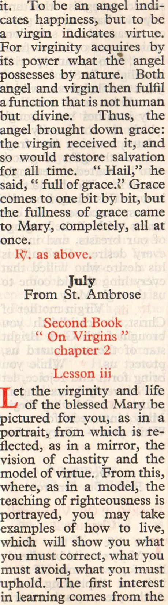

Proof sheet Check the marked words against the scan beside them. Click any word to correct it. The sheet remembers what you do, so you can close it and come back. Press send corrections when you stop. That puts your work on the clipboard, and you paste it into a message.
Some marks are struck through. The book prints no such mark, so they are stray ink. Press delete the stray ink on a page to take them all off it, and click any one of them to keep it.
Tab go to the next marked word Enter keep what you typed and go on Esc the engine was right, go on empty the word to delete it type two words to add one type R/ or V/ for ℟ and ℣
pages 12 words 4088 to check 391 that is 9.6% stray marks 192
29-Saturday-Office-of-the-BVM-0001a delete the stray ink (8)
column 1 1 4 The Saturday Office of f| the Blessed Virgin Mary is | said on all Saturdays of the ! IV class. The antiphons | and psalms are taken from i Saturday ; the remainder 7 is as follows.
hom earth and sea and sky proclaim, The Ruler of their triple
frame, He unto whom their praises rise, Within the womb of Mary
lies. Her womb, the seat of
every grace, Is now the Lord’s abiding place ; That Lord to whom the sun by day, The moon by night, their
O happy Mother, you are blest ! Enclosed beneath your
column 2 fice of the rein Mary Lies God, creator great, who planned The world he holds within his hand. © blessed by herald angel’s tongue, er you God’s shadowing spirit hung, And filled your womb whence came at birth The long-desired of all the earth. ©O Mary, mother of all grace, True mercy’s mother to our race, Protect us now from Satan’s power, And own us at life’s closing hour. All glory be to you, O Lord, Vhe Virgin’s Son, by all adored ; With Father and the Spirit be All glory yours eternaliy. Amen. Nocturno
During Easter time three psalms only are said with the antiphon and versicle of Paschal time, according to the sequence of the weeks,
29-Saturday-Office-of-the-BVM-0001b delete the stray ink (20)
column 1 May the Virgin Mary pray for us with loving
voice. Amen. May the loving Virgin
Mary come to our aid in every trouble and hard-
May the Queen of Angels bring us to the company of the heavenly
The Ist and 2nd lessons are taken from _ current Scripture ; their respon- sories are of the Season. The 3rd lesson is taken from those given below, according to the appro- priate month. The follow- ing responsory is said. R, ili.
Virgin, mother of Christ, in childbirth you brought forth Ged. Bright star of the sea, guard us,
protect us. While you bring forth and rejoice, let the heavenly hosts sing in
© loving Virgin Mary, intercede for us. -— While
Pray for us, boly Mother of God.
Alleluia. "That we may*be made worthy of the promises of Christ.
column 2 Little Chapter Ecclus. 24 | L
ike cassia and camel’s thorn I gave forth the aroma of spices, and like | choice myrrh I spread a pleasant odour. : Lady, crowned with !
glory bright, Sublime above the starry | height, |. Your arms the great | Creator pressed, A suckling at your sacred breast. | What weak, unhappy Eve i withdrew You through your gracious 7 Son renew ; Of heaven you are the ' entrance fair
That all afflicted may go there. You are the great King’s | portal bright, :
forth the Light ; | Come, then, you ransomed nations, sing — ‘The Life divine, that she : did bring. | © Mary, mother of all grace, | True mercy’s mother to .
our race; | Protect us now from Satan’s 7 power, | And own us at life’s closing | hour. |
29-Saturday-Office-of-the-BVM-0002a delete the stray ink (8)
column 1 Lord, The Virgin’s Son, by all adored, With Father and the Spirit
be | All glory yours eternally. | Amen. God has chosen. her and has given her
From the octave of Christmas to the feast of the Purification. Bened. ant.
A woman in childbirth brought forth the king whose name is
eternal. Hers is both the jov of motherhood and the honour of virginity; the like has not been seen be- fore or since, alleluia.
| ing Septuagesima. Prayer
God, who, through the fruitful virginity of the blessed Mary, offered to all
men the rewards of eternal salvation, grant, we be- seech you, that we may ex- perience her intercession, through whom we were found worthy to receive among us the author of life, our Lord Tesus Christ, your son. Who lives and
column 2 Quinquagesima Sunday and from the feast of the Most Holy Trinity to Advent, Bened. ant.
Hail, morn- ing star, healer of sinners, leader and queen of the world, who alone may worthily be called Virgin | Hold up against the weap- ons of the enemy that shield of salvation, your title of virtue. O chosen spouse of God, be to us a straight path to eternal joys.
sant we beseech you, Lord God, that we of your household may enjoy unfailing health of mind and body, and through the glorious inter- cession of blessed Mary ever virgin, be delivered from present sorrow to delight in joy eternal. Through.
Blessed Mary, Mother of God, ever virgin, temple of the Lord, sanctuary of the Holy Spirit, you alone, without equal, have been pleasing to our Lord Jesus Christ. Pray for the people, plead for the clergy, intercede for the consecrated women, alleluia, alleluia.
29-Saturday-Office-of-the-BVM-0002b delete the stray ink (21)
column 1 rant, we beseech you, Lord God, that we of your household may enjoy unfailing health of ming and bedy, and, through the glorious intercession of blessed Mary ever virgin, be de- livered from present serrow to delight in joy eternal. ‘Through. wet us bless the Lord
During the Christmas season and in Paschal time the double is added
to the responses at the Hours. Little Chapter Ecclus. 24
[ ike cassia and camel’s r thorn I gave forth the A aroma of spices, and like p choice myrrh I spread a . pleasant odour.
of Clirist, hear your suppliant servants. — Holy.
And from heaven bring us the favour procured. - i Hear. — Glory. — Holy.
5 Mother of God. "That - we may be made worthy ls of the promises of Christ. r y SEXT r
Little chapter Ecclus. 24
rt ts o I took root in an honoured. peopie, in the
column 2 their inheritance. Where 1,
his faithful servants are | : gathered J] love to linger. |
Pray for us, holy | Mother of God. — Pray. |
That we may be made worthy of the promises of Ve Christ. - Holy. - Glory. - ;
Pray for us. God has chosen ! her, and has given her |
preference. He gives | her his home to dwell in. |
Little Chapter Ecclus. 24
grew tali like a cedar in if Leb’anon, and like a . cypress on the heights of | palm tree in Enged’i, and | Hermon. I grew tal! like a like rose plants in Jericho. 2 God has chasen a
her, and has given her ' |
preference. ~ God. i Fie gives her his home to | dwell in. — And has given. - 7 Glory. - Ged. |
Mary ever-virgin. Intercede for us with the 7 Lord our God. fk
This Office ends with | None. , | | The third lesson is taken ! from those appointed to J each month, as follows.
29-Saturday-Office-of-the-BVM-0003a delete the stray ink (16)
column 1 From the Homily of St. Augustine, Bishop
5th on the Birth of | Our Lord | | Lesson ili
| e to whom the Virgin Mother gave birth was, in turn, to fashion sons for
God. He would annul the sentence against the great disobedience, remove the penalty of death, and give imstead everlasting life to
womb, and gave to the world as if he were a serv- ant, was the same whom the angels in heaven worship as God. This mother gave
birth to a son, but she was to be nourished more by him than he by her. Ina mortal womb the Virgin received an immortal guest; in an earthly dwelling she received the king of heaven.
He, who was to be born of a Virgin, gave motherhood
| the thought of bearing a child, but God spoke by his angel, and she
having heard, conceived. Let every age now hear what was never heard be- fore. This Virgin in child-
birth celebrated her nup-
tials: in giving birth re- doubled her virginity: she
column 2 Christ, in childbirth you brought forth God. Bright star of the sea, guard us, protect us. While you
bring forth and rejoice, let the heavenly hosts sing tn praise. OQ loving Virgin
Mary, intercede for us. —- While you. — Glory. ~ Let the. February From St. John Damascene
3rd Sermon on the Death of the Blessed Virgin Lesson iii
he reflection of his glory, the very stamp of the Paternal nature, who up- holds the universe by his word of power, is borne in virginal arms in the form of an infant. O truly divine wonders [| O- mysteries transcending nature and thought ! O privileges of the Virgin surpassing all human state! O sacred Mother and Virgin, what a wondrous thing is this mystery that surrounds you ! You are blessed among women and biessed is the fruit of your womb. You are blessed in all ages, and alone worthy to be declared blessed before- hand. Kor you are that regal throne at which the angels assist, adoring their Master and Lord. You are the spiritual Eden. holier
29-Saturday-Office-of-the-BVM-0003b delete the stray ink (13)
column 1 Eden of old. For, in this Jatter, the earthly Adam lived, but in you dwells the Lord, who came down from heaven.
March From St. Epiphanius, Bishop
On the Praises of the Holy Mother of God
he Virgin Mary sur- passes all, except God alone. She emerges more beautiful than the very cherubim and sera- phim themselves and the whole host of angels. The language of heaven and earth does not suffice to extol her—indeed it 3s even. beyond the compass of angels. They, indeed, sang to her hymns of praise and honour, but, nevertheless, could not, in that way, speak words be- fitting her exalted state. For the angels used to re- joice as if they alone pos- sessed God, but the mast holy Virgin was raised above them because she, op. earth, conceived God, who dwells in heaven. In this way she was to bring the hosts of angels to mingle with men on earth. For she, the medistrix between heaven and earth,
column 2 of the two. She showered i down on earth the dew of on
the Holy Spirit, so that the fruit of faith would be i produced. |
April J From St. Epiphanius, |
On the Praises of the Holy |
hrough you, holy Vir- | gin, Christ breke down | the dividing wall of hos- tility. Through you, was heavenly peace given to ;
the world. Through you, the ends of the earth were | enlightened. Through you, I. men have become angels. | Through you, they were 7 called the friends and serv- i ants and the sons of Gad. : Through you, they were | made worthy to become
fellow servants with the ,
angels and to associate freely with them. Through you, came awareness of heaven, and through you :
praise is sent from earth to heaven. ‘Through you, the cross shone out on the Ss whele world; on which cross, indeed, hung your |: Son, Christ Our Lord. I Through you, death is ; trampied underfoot and | hell is robbed. Through : you, idols were felled )
29-Saturday-Office-of-the-BVM-0004a delete the stray ink (9)
column 1 aroused. Through you we have come to know the only-begotten Son of God, whom you brought forth from your bosom,
Virgin mother of Christ, 11. childbirth you brought forth God. Bright star of the sea, guard us, protect us. While you bring forth and rejoice, let
the heavenly hosts sing in praise, alleluia. O loving
Virgin Mary, intercede for us. - While you. - Glory. — Alleluia. May From St. John Chrysostom
Sermon on the Birth of the Lord , Lesson iii
ince Adam, without the aid of woman had pro-
duced woman, womankind was indebted to men. The Virgin, therefore, in order to repay, on behalf of Eve,
birth without the concur- rerice of man. Lest Adam
might glory that without the aid of woman he had given life to woman, the
woman, without the aid of
man, gave birth to man. Thus by the miracle com- inom to each he would indicate the equality of her
column 2 out impairing Adam, so he formed of the Virgin a living temple, without in the least harming her virginity. Even after the loss of a rib Adam remained sound and unharmed; so, after God came forth as an infant from ber, the Virgin, too, remained inviolate. Virgin mother of
Christ, mm childbirth you brought forth God. Bright star of the sea, guard us,
protect us. While you bring forth and rejoice, let the heavenly hosts sing in praise. Alleluia.
O loving Virgin Mary, intercede for us. -— While you. - Glory.
Let the. Allejuta. june From St. Peter Chrysologus
Third Sermon on the Annunciation Lesson iii
é must not be amazed that the Virgin is greeted by an angel, for there has always been an affinity between angels and virginity. To live in the body while transcending the body is not an earthly life but a heavenly one. And you might as well know that it is a greater thing to acquire angelic
29-Saturday-Office-of-the-BVM-0004b delete the stray ink (29)

column 1 it. To be an angel indi- cates happiness, but to be a virgin indicates virtue. For virginity acquires by its power what the angel possesses by mature. Both angel and virgin then fulfil a function that is not human but divine. Thus, the angel brought down grace: the virgin received it, and so would restore salvation for all time. ‘* Hail.’’ he said, “* full of grace.?’ Grace comes to one bit by bit, but the fullness of grace came to Mary, completely, all at once.
Second Book “On Virgins ” chapter 2 Lesson ili
et the virginity and life of the blessed Mary be pictured for you, as in a portrait, from which is re- flected, as in. a mirror, the vision of chastity and the model of virtue. From this, where, as in. a model, the teaching of righteousness is portrayed, you may take examples of how to live, which will show you what you must correct, what you must avoid, what you must uphold. The first interest in, learning comes from the
column 2 But what could be more excellent than the Mother | of God? What more | brilliant than she whom
Brilliance himself selected? | What more chaste than she who without bodily contact | bore a body? And what |!
shall I say of her other :
virtues? She was virgin : not only in body but also i in mind, and would not, by any trace ci guile, weaken | chaste love. Humble in |
heart, serious in word, understanding in mind, re- | served in speech, most attentive to reading; plac-
ing her trust not in the | fickleness of riches but in the prayer of the poor. Virgin mother of | Christ, in childbirth you ’
brought forth God. Bright |
star of the sea, guard us, protect us. While you
bring forth and rejoice, let | the heavenly hosts sing in | praise. O loving Virgin | | Mary, intercede for us. —- i While you. - Glory. -— Let f the. |
August ' From St. John Damascene |
Third Sermon on the : Death of the Blessed Virgin |
| ow is it that the foun- i
through death to life ? How is it that she, who
29-Saturday-Office-of-the-BVM-0005a delete the stray ink (7)
column 1 laws of nature, finally submits to those same laws, and the body that is im- maculate is subjected to death ? For this perishable nature must put on the imperishable, especially
since the very Lord of nature himself has not refused to undergo the trial of death. Truly he dies in the flesh, and by his death he abolishes death. He be- stows that which is imperi- shable and makes of death a fount of resurrection. O
how did not he, the father and maker of ali things, receive into his own hands that holy soul as it left the body that had encompassed God! Rightly does he honour her whom by nature he had made hand- maiden, but whom in the plan of grace he had made his mother. ior he was truly incarnate and was not,
as it were, disguised, and
September From St. Bernard
1 | Sermon on the Birth of the 4d Blessed Virgin Mary La eos ; Lesson ili
et us consider, brethren, with what reverence God wished us to venerate Mary since in Mary he
column 2 should recognise that any hope we have, or any grace or measure of salvation, must be an overflow from her “ who went up rich in delights.” She is truly a garden of delights on which that divine south wind not only breathes but through which it continually cir- culates, causing her frag- rances—the gifts of graces —to be wafted unceasingly to and fro. We should then honour this Mary from the utmost recesses of our hearts, with all the longings of our breasts, and in our every desire. For such is his desire who willed that everything should come to us through Mary. Virgin mother of
Christ, in childbirth you brought forth God. Bright star of the sea, guard us, protect us. While you
bring forth and rejoice, let the heavenly hosts sing in praise, O loving Virgin
Mary, intercede for us. - While you. — Glory. -— Let us. October From St. Ambrose
Book 2 “On Virginity” Chapter 2
he life of the virgin Mary should be a head- line for everyone. If then it is not displeasing to the Author, let us test her work,
29-Saturday-Office-of-the-BVM-0005b delete the stray ink (21)
column 1 any for herself Mary’s reward ‘ace may imitate Mary’s on, example. How many ‘om examples of virtue shine “ich forth in this one Virgin | ly a The reserve of modesty, rich the banner of faith, the not obedience of devotedness: ugh a virgin in the home, a cir- companion in the ministry, rag- a mother in the temple. aces How many virgins will she ngly help and how many will hen she inspire and so bring to _the Christ, saying, “‘ This vir- our gin by her unstained purity ings preserved unsullied my our Son’s couch and marriage- h is bed”! So, too, the Lord that himself will praise them to ie to his Father, undoubtedly repeating his words, er of “Righteous Father, the you world has not known me, right but these have known me \ us, and have refused to know you the world.” How great, >, let then, is the joy of the iz in applauding angels that a irgin virgin, who on earth led a is. - heavenly life, should be - Let worthy to dwell in heaven.
November - From St. Bernard
ity” First homily on the Gospel
“The angel Gabriel was 33 rirgin tik. head- ho is the virgin so then exalted as to be greeted o the by an angel, yet so humble work, as to be a carpenter’s wife ?
column 2 virginity and humility ! | God is greatly pleased with ‘ that soul in which humility | does credit to virginity and i virginity adorns humility. : When you listen to a virgin, you listen to one who is | humble. Though you may | not be able to practise the - virginity of the humble one, ] imitate the humility of the | virgin. Virginity, indeed, is an excellent virtue, but | humility ig more necessary. The former is recom- | mended, the latter is of i obligation. You are in- 7
vited to the one, but ob- . liged to the other. The 7: former is specially reward- ed, the latter is demanded. 3
You can, indeed, be saved i without virginity but you cannot be saved withcut / humility. The humility - that mourns a lost virginity
would venture to say that ;
even the virginity of Mary ' would not have been pleas- |
December 7, From St. Bernard |
Third homily on the 1) Gospel t
"The angel Gabriel was li sent.” | |
29-Saturday-Office-of-the-BVM-0006a delete the stray ink (13)
column 1 considered in her mind what sort of greeting this might be. The truly virginal are timorous and never self-complacent. They are fearful even in
! things that are harmless, in order that they may avoid those things that
should be feared. For they know that they bear a precious treasure in fragile
vessels ; and that it is very
difficult to live like angels ainong men, and to behave on earth in a heavenly way. And so they Icok upon any- The Little ¢ Blessed V3
grace: the Lord is with you. Blessed are you among
women, and blessed is the fruit of your womb, Jesus. | | Hail
A is said at the be- | ginning and end of each | Hour, except at the end of | | Matins and Compline and | at the beginning of Lauds. When one Hour imme- f diately follows another, | | this versicle is said only mn once between the Hours.
column 2 happening unexpectedly, as attacks directed wholly against themselves. For that reason Mary was troubled at the saying of the angel. She was troubied, but she was not upset, and she considered in her mind what sort of greeting this might be. That she was troubled arose from her virginal modesty: that she was not upset was prompt- ed by her courage; that she remained silent came from her unique prudence.
fice of the rgin Mary © Lord, open my
shall declare your praise. © God, make haste
come to my aid. — Glory. - As it was - Alleluia
our joy, p. Ll. Whont earth
29-Saturday-Office-of-the-BVM-0006b delete the stray ink (27)
column 1 Ke d, poured upon you lips. are Because God has blessed ind you for ever more. this Our Father... And lead | us not imto temptation. was _ oe her But deliver us from
evil. she sir, ask for a bless-
nce gracious Virgin of virgins . intercede for us with the Lord. Amen,
oly Mary, Virgin of virgins, mother and daughter of the King of kings, give us consolation ; so that through you we may deserve to have the reward my of the heavenly kingdom, outh and to reign for ever with alse. the chosen ones of God. taste Indeed, Lord.
word, Thanks be to God. lory. © holy and im-
know not with what praises the to extol you, because in
>, Let your bosom you have car- ried him whom the heavens
out calimot contain. Blessed are you. among women and blessed is the fruit of your arth womb. - Because.
May the holy assed mother of God be a bene- -and factress to us. Amen.
column 2 oly Mary, kindest of the kind, and holiest of the holy, intercede for us. May he who rcigns above the heavens and who for us was born of you, O Virgin, receive our prayers through you, that in his love cur faults may be wined out. Indeed, Lord. .
You are blessed, | Virgin. Mary, who bore the | Lord, the creator of the |
world. You gave birth I to him who made you, yet | you remain a virgin for
of grace, the Lord is with |. you. ~ You gave birth.
May the Virgin | Mary, with her loving child, bless us. Amen. |
L oly Mother of God, who : worthily deserved to :
conceive him whom the | whole world cannot con- | tain, cleanse our sins by your loving intercession ; | so that we who have been | redeemed may through you be able to ascend to the seat
of everlasting glory, where | with that same Son, you reign for ever. Indeed, Lord. You are truly ] happy, holy Virgin Mary, ' and most worthy of all |
praise, for, from you has risen the Sun of righteous- ! ness, Christ, our God. | |